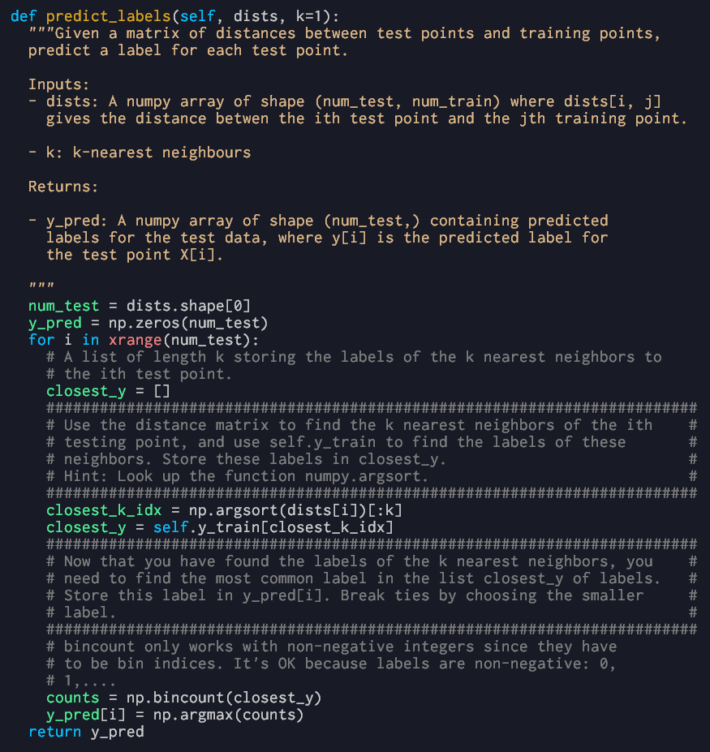
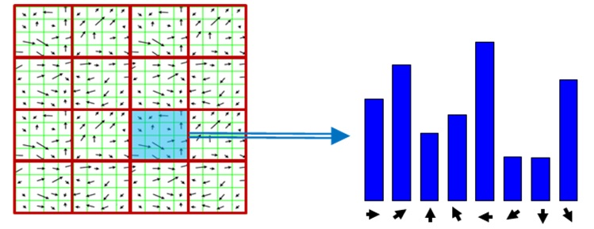

Neural Networks
Biological inspiration / biomimicry


Perceptron Learning Algorithm
Binary Threshold Neurons / McCulloch-Pitts
Question. Used in Perceptrons. Also called Linear Threshold Neurons?
Definition. First compute $z = w^T x,$ then output $$y = \begin{cases} 1 \quad\text{ if } z \geq 0 \\ 0 \quad\text{ otherwise,} \end{cases}$$ representing "all VS none" activation. Here we implicitly added the threshold as a bias unit: $w = (b, w_1, w_2, \ldots).$ The function $y(z)$ is also called the Heaviside / unit step function.
Limitations of the Binary Threshold Neuron
Group Invariance Theorem
Proposition. A single binary threshold neuron cannot learn the XOR function, because geometrically its truth table represented on a plane is not linearly separable.
Proposition. Perceptrons can't learn patterns if they're subject to transformations that form a group, e.g. translations with wrap-around.
TODO. Details?
Linear Neuron Learning Algorithm
Definition. Given a training case $x_n$ and a weight vector $w,$ the neuron's estimate $y_n$ of the desired output is $$y_n = \sum_{i}^{} w_i x_{ni} = w^T x_n.$$ Define the cost function $E_n$ to be the squared difference error $$E_n = \frac{1}{2}(t_n - y_n)^2,$$ where $t_n$ is the target output, i.e. the "ground truth", and define the total error to be $$E = \sum_{n}^{} E_n.$$ Finally the goal of learning is to minimize $E$: $$\min_{w} E.$$
Delta Rule: Learning by Gradient Descent
The error partials are $$\frac{\partial E}{\partial w_i} = \sum_n \frac{dE_n}{dy_n} \frac{\partial y_n}{\partial w_i} = - \sum_n (t_n - y_n) x_{ni}.$$ The Delta Rule / Gradient Descent says that we should change $w_i$ in the opposite direction as the change in error along $w_i,$ give or take a learning rate $\alpha$: $$\Delta w_i = - \alpha \frac{\partial E}{\partial w_i} = \sum_n \alpha (t_n - y_n) x_{ni},$$ i.e. $\alpha$ tells us how much to change, and the negative sign tells us which direction to go, namely the opposite direction. E.g. if $\frac{\partial E}{\partial w_i} > 0,$ that means the error goes up as $w_i$ increases, so we want to decrease $w_i$ to make it go down, and vice versa.
Error Surface of a Linear Neuron

Question. If I recall correctly feature normalization should help with slow learning due to unscaled data? What about pathological cases like this?
Logistic Neurons
Learning Rule
Definition. The estimator for a logistic neuron is given by $$y = \frac{1}{1 + e^{-z}}$$ where $z = w^T x.$ The function $y(z)$ is also known as a logistic / sigmoid function, and $z$ is sometimes called the logit. As before, the error is the squared difference $$E = \frac{1}{2} \sum_n (t_n - y_n)^2.$$
Proposition. The estimator derivatives are $$\frac{\partial y}{\partial w_i} = \frac{dy}{dz} \frac{\partial z}{\partial w_i} = y(1 - y) x_i,$$ and so the error derivatives are $$\frac{\partial E}{\partial w_i} = \sum_n \frac{dE_n}{dy_n} \frac{\partial y_n}{\partial w_i} = - \sum_n (t_n - y_n)(1 - y_n) y_n x_{ni}.$$
Learning with Hidden Units
Simplifying Notations
In a neural networking using logistic neurons with hidden layers, the neurons $y_n$ are arranged in layers, with neurons in each layer receiving input from every neuron in the layer below, and outputting to every neuron in the layer above it. To simplify notations, $y_i$ is used to denote any neuron in a fixed row $i,$ and $y_j$ to denote any neuron in the layer $j$ above it, i.e. we're reusing $j$ to refer to both a layer and a particular neuron in that layer.
The weights controlling how neurons in row $i$ act on neurons in row $j$ are $w_{ij},$ where $i$ ranges over the neurons in row $i$ and $j$ ranges over neurons in row $j.$ Furthermore, $w_{ij}$ is also used to denote the weight of neuron $y_i$ on neuron $y_j,$ so that e.g. the logit for neuron $y_j$ is $$z_j = w_{-} y_{-} + \cdots + w_{ij} y_{i} + \cdots + w_{-} y_{-},$$ where each unnamed $w_{-} y_{-}$ is a weight and neuron in row $i,$ and we're only interested in the weight and neuron $w_{ij} y_{i},$ so we give them names $ij$ and $i.$
Backpropagation Algorithm
Given an error $E$ and a training case $x = y_1,$ we want to compute the errors of $E$ due to $y_n$ for all neurons $y_n,$ i.e. we want to compute $\frac{\partial E}{\partial w_{ij}}$ for all $ij.$ With these partial derivatives calculated over all training cases, we can then apply Gradient Descent or some other optimization algorithm to compute the minimum weights $W.$
Question. Is there any other optimization algorithm? Numerical ones? Yes.
Keep in mind that there is a weight matrix $w$ for each pair of layers $i$ and $j,$ where each entry $w_{ij}$ corresponds to the connection between neuron $y_i$ in layer $i$ and neuron $y_j$ in layer $j.$ Therefore the weights of all connections together form a three-dimensional matrix $W.$
Analytic Solution vs Random Perturbation
An alternative to using Backpropagation is to randomly perturb the weights and see how each change affects the error (a kind of reinforcement learning), but that's a lot slower than solving for the optimal solution analytically, since you have to test a single weight change on all training cases to see if that change made an improvement on the error.*
Deriving the Error Derivatives
Definition. For quick reference, once again the logit and estimator of neuron $y_j$ in layer $j$ are: \begin{align*} z_j &= w^T x = w_- y_- + \cdots + w_{ij} y_i + \cdots + w_- y_- \\ y_j &= \frac{1}{1 + e^{-z_j}}. \end{align*} And the total error of the neural network is: $$E = \frac{1}{2} \sum_n (t_n - y_n)^2.$$
Proposition. The error derivatives for a logistic neural network with hidden units are: \begin{align} \frac{\partial E}{\partial z_j} &= \frac{\partial E}{\partial y_j} \frac{dy_j}{dz_j} = y_j (1 - y_j) \frac{\partial E}{\partial y_j} \\ \frac{\partial E}{\partial y_i} &= \sum_j \frac{\partial E}{\partial z_j} \frac{\partial z_j}{\partial y_i} = \sum_j w_{ij} \frac{\partial E}{\partial z_j} \\ \frac{\partial E}{\partial w_{ij}} &= \frac{\partial E}{\partial z_j} \frac{\partial z_j}{\partial w_{ij}} = y_i \frac{\partial E}{\partial z_j}. \end{align}
These equations are simple applications of the Chain Rule. But what could they possibly mean? It's kinda like a recursive Chain Rule with many interdependent variables.
Meaning of the Error Derivatives and How to use them
At layer $i,$ consider $E$ as a function of the $z_j$'s in layer $j.$ Since $z_j$ depend on $y_i,$ by the Chain Rule we have the second equation: $$\frac{\partial E}{\partial y_i} = \sum_j \frac{\partial E}{\partial z_j} \frac{\partial z_j}{\partial y_i} = \sum_j w_{ij} \frac{\partial E}{\partial z_j}.$$ To calculate $ \frac{\partial E}{\partial z_j},$ we use equation (1): $$\frac{\partial E}{\partial z_j} = \frac{\partial E}{\partial y_j} \frac{dy_j}{dz_j} = y_j (1 - y_j) \frac{\partial E}{\partial y_j},$$ which requires $\frac{\partial E}{\partial y_j},$ so we use equation (2) again to level up, and so on until the top output layer.
In practice we'd start at the top and calculate down, and along the way down we use the third equation to calculate $\frac{\partial E}{\partial w_{ij}}.$ Once we have all of those we use the Delta Rule to calculate the necessary weight changes: $$\Delta w_{ij} = - \alpha \frac{\partial E}{\partial w_{ij}}.$$
Optimization Issues
Question. How often to update weights: online, full batch, mini batch.
Question. How much to update weights via $\alpha$ learning rate: fixed, adaptive, adaptive per connection, alternatives to Steepest Descent.
Generalization Issues / overfitting
Ways to reduce overfitting: weight decay, weight sharing, early stopping, model averaging, Bayesian fitting of neural nets, dropout, generative pre-training.
Application: learning to predict the next word
Example. Learn $ArB$ to guess $B$ given $A$ and $r.$
Example. Another application of $ArB$ is to guess the probability of $ArB$ being correct given $A, r,$ and $B.$ Need both correct and incorrect training cases for learning.
Digression: Philosophy of Learning
Feature theory: a concept is a set of semantic features. Structuralist theory: meaning of a concept lies in its relationships to other concepts.
Hinton: why not both?
Question. How to implement relational knowledge in a neural net? Maybe many neurons per concept and one neuron reused in multiple concepts.
Question. Why not all neurons in all concepts? Maybe cause then you'd have no relations? Kinda woolly at the moment.
Digression: Softmax Output Function and Cross-Entropy Cost Function

Definition. A softmax group $G$ is a group of output neurons whose outputs use the softmax activation function defined by $$y_i = \frac{e^{z_i}}{\sum\limits_{j\in G} e^{z_j}},$$ so that the outputs sum to $1.$ The cost function is given by $$C = - \sum_j t_j \log y_j.$$
Proposition. By the Quotient Rule, the derivatives are \begin{align*} \frac{\partial y_i}{\partial z_i} &= y_i(1 - y_i) \\ \frac{\partial y_i}{\partial z_j} &= -y_i y_j, \end{align*} or more fancy-like using the Kronecker Delta: $$\frac{\partial y_i}{\partial z_j} = y_i(\delta_{ij} - y_j).$$
Proposition. The derivatives of the cost function are: $$\frac{\partial C}{\partial z_i} = y_i - t_i.$$
Proof. Apply the Chain Rule: $$\frac{\partial C}{\partial z_i} = - \sum_j t_j \frac{\partial \log y_j}{\partial z_i} = - \sum_j t_j \frac{\partial \log y_j}{\partial y_j} \frac{\partial y_j}{\partial z_i}.$$ Using our formula for $\frac{\partial y_j}{\partial z_i},$ we get $$\frac{\partial C}{\partial z_i} = - \sum_j \frac{t_j}{y_j} y_j(\delta_{ij} - y_i) = - \sum_j t_j (\delta_{ij} - y_i).$$ Recall that this is a multiclass classification problem, and so exactly one of the $t_j$'s is 1 and the rest are zero. Therefore: $$\frac{\partial C}{\partial z_i} = - t_i (1 - y_i) + \sum_{j\neq i} t_j y_i = - t_i + y_i \sum_j t_j = y_i - t_i.$$
Application: Multiclass Classification using Softmax and Cross Entropy
Suppose an input $x$ belongs to class $i \in G.$ That means $t_i = 1$ and $t_j = 0$ for all other $j \in G.$ It also means that $y_i$---which represents the probability of the input belonging to class $i$---should be high, and the cost $$C = - \sum_j t_j \log y_j = - \log y_i$$ encapsulates that idea: if $y_i$ is high, then we've guessed correctly and $C$ is low; otherwise $y_i$ is low, and we've guessed incorrectly and $C$ should be high---hence the negative sign.
Question. Why $\log$? Maybe cause it gives nice derivatives like $\frac{\partial C}{\partial z_i} = y_i - t_i.$
The reason we use $\log$ is that when the answer is $t_i = 1,$ and we guess $y_i$ very close to zero, i.e. we've guessed very wrong, we want the cost to be very high, and we can see that from the graph of log: when $y_i$ is close to zero, $\log y_i$ is very negative and so $- \log y_i$ is very large, i.e. it's a big cost. And vice versa, if the answer is $1$ and we guess close to 1, then the cost is very nearly zero.
Question. What happens when $t_i = 0,$ and we guess right with $y_i$ close to zero, or we guess wrong with $y_i$ close to one? The cost function $C$ seems to ignore those guesses. Shouldn't we punish those neurons that produce false positives and award ones that produce true negatives?
Application: Speech Recognition: word prediction
Problem. Speech recognizers have to know which words are likely to come next and which are not.
Trigram method
Take a huge amount of text and count frequencies of all triples of words. Use these frequencies to calculate $$\frac{p(c|a,b)}{p(d|a,b)} = \frac{\mathrm{count}(abc)}{\mathrm{count}(abd)}.$$
Fall back to digram if trigram frequencies too low.
Drawback. Trigram doesn't understand similarity between words.
Need to do extra readings on the rest of the speech recognition lectures. Not a lot of details there.
Searching far and wide,
Each pokemon to understand
The power that's inside.
Pokemon! Gotta catch 'em all!
Turns out it's part of the assignment:
CSC321 Assignment 1: Learning Distributed Word Representations
Gonna use the Winter 2015 version of CSC321 cause they use Python instead of MATLAB.
Problem. Predict a word given a sequence of preceding words. Will need to build a neural net that can represent words well.
Network Architecture / Language Model
Let $K = 250$ be the number of words in our dictionary, $D = 16$ be the number (also called the Embedding Dimension) of neurons for each word in the Embedding Layer, and let $H = 180$ be the number of neurons in the Hidden Layer. Note that the final output layer has $K$ neurons, with each output $y_k$ corresponding to the probability that the $k$-th word is the answer we're looking for, i.e. the $k$-th word is the word following the three input words.
An example of trade off between space and time
In the word embedding layer, we can just train one embedding model instead of three, one for each word. So in total the trainable parameters in the network is $$KD + (3DH + H) + (HK + K) = 58070,$$ with $H$ extra bias parameters for the hidden layer and $K$ bias parameters for the output layer. On the other hand, if we wanted to store all $4$-gram frequencies explicitly, then we'd need $$K^4 = 250^4 = 3906250000$$ entries in the lookup table.
Mini-batch Backpropagation
The general backpropagation algorithm remains the same, but since our architecture is made up of different kinds of neurons (using different activation functions: unweighted linear in the embedding layer, logistic in the hidden layer, and softmax in the output layer) our derivatives are slightly different. In addition, the starter assignment code uses mini-batch, so we'll also show vectorized implementations of the derivatives.
Output Layer
Let $y_j$ be a neuron in the output layer and $z_j$ be its logit. Then the loss derivatives are the same as before: $$\frac{\partial C}{\partial z_j} = y_j - t_j.$$ We can denote the matrix form as a row vector $$\frac{\partial C}{\partial Z_j} = Y_j - T_j \sim 1 \times K$$ of length $K,$ where the subscript just tells us which layer it is, in this case $j$ for output. Mini-batch requires that we calculate this derivative for $m = 100$ training cases, say, so the loss derivative $$\frac{\partial C}{\partial Z_j} = Y_j - T_j \sim m \times K$$ is in fact an $m \times K$ matrix, where $K = 250$ is the number of neurons in the output layer, which is also the number of words in our dictionary.
Notation. It's often pretty useful to check matrix dimensions, so we'll denote them by $\sim.$
Hidden Layer
Let $y_h$ be a neuron in the hidden layer, $z_h$ be its logit, and $w_{jh}$ be its weight to one of the output neurons $y_j.$ In particular we have \begin{align*} z_j &= \sum_h w_{jh} y_h\\ y_h &= \frac{1}{1 + e^{-z_h}}\\ z_h &= \sum_e w_{he} y_e \end{align*} where $y_e$ and $w_e$ are some neuron and its weight in the embedding layer. Then $$\frac{\partial C}{\partial z_h} = \frac{\partial C}{\partial y_h} \frac{\partial y_h}{\partial z_h},$$ and apply the Chain Rule, remembering that all the $z_j$'s in the output layer depend on $y_h$: $$\frac{\partial C}{\partial z_h} = \frac{\partial y_h}{\partial z_h} \sum_j \frac{\partial C}{\partial z_j} \frac{\partial z_j}{\partial y_h} = y_h (1 - y_h) \sum_j w_{jh} \frac{\partial C}{\partial z_j}.$$ Here we also used a very nice and useful derivative so it's worth writing down:
Proposition. If $y = \frac{1}{1 + e^{-z}},$ then $$\frac{\partial y}{\partial z} = y (1 - y).$$ Sometimes we'll also confuse $d$ with $\partial.$
Back on topic: let $W_h$ be the $K \times H$ weight matrix from the hidden layer to the output layer, so e.g. the first column of $W_h$ would be weights over the hidden layer neurons going into neuron 1 in the output layer. Let $Y_h$ be the $m\times H$ matrix of activations of the hidden layer for the $m$ mini-batch, so e.g. the first row of $Y_h$ contains the $y_h$ values of the hidden layer neurons on the first training case. Then the matrix form of $\frac{\partial C}{\partial z_h}$ is $$\frac{\partial C}{\partial Z_h} = Y_h * (1 - Y_h) * \left(\frac{\partial C}{\partial Z_j}W_h\right) \sim m \times H,$$ where $*$ denotes element-wise multiplication.
The derivatives of $C$ with respect to the hidden to output weights are $$\frac{\partial C}{\partial w_{jh}} = \frac{\partial C}{\partial z_j} \frac{\partial z_j}{\partial w_{jh}} = y_h \frac{\partial C}{\partial z_j}.$$ In matrix form, this becomes $$\frac{\partial C}{\partial W_h} = \frac{\partial C}{\partial Z_j}^T Y_h \sim K \times H.$$ This last formula needs a bit of explanation: recall that $\frac{\partial C}{\partial Z_j}$ is an $m\times K$ matrix, and that $Y_h$ is an $m\times H$ matrix. Therefore the entries of $\frac{\partial C}{\partial W_h}$ are of the form $$\left(\frac{\partial C}{\partial W_h}\right)_{jh} = \sum_m y_h \frac{\partial C}{\partial z_j},$$ i.e. we're summing all the partial derivatives $\frac{\partial C}{\partial w_{jh}}$ over the mini-batch. This is because when we do Gradient Descent, the Delta Rule says that $$\Delta w_{jh} = - \alpha \frac{\partial C}{\partial w_{jh}}$$ for one training case, so the change in $w_{jh}$ over all training cases is $$\Delta w_{jh} = - \alpha \sum_m \frac{\partial C}{\partial w_{jh}}.$$ As a sanity check: $\frac{\partial C}{\partial W_h}$ is $K \times H,$ the same size as $W_h.$
Hidden Layer Bias Units
Let $b_h$ be the bias unit in the hidden layer going into neuron $y_j$ in the output layer. Then $$\frac{\partial C}{\partial b_h} = \frac{\partial C}{\partial z_j} \frac{\partial z_j}{\partial b_h} = \frac{\partial C}{\partial z_j},$$ since $\frac{\partial z_j}{\partial b_h} = 1.$ Similar to the weight derivatives, we also want to sum these over the $m$ training cases, so $$\frac{\partial C}{\partial b_h} = \sum_m \frac{\partial C}{\partial z_j},$$
sum(A, 0) and sum(A, 1)
respectively.
Note. An alternative to treating bias units separately from normal neurons is to add a constant feature 1 in each input layer going in to the next layer.
Embedding Layer
Similar to the previous layer, let $y_e$ be a neuron in the embedding layer, $z_e$ be its logit, $w_{he}$ be its weight to neuron $y_h$ in the hidden layer. There is one difference: in this layer the starter code uses a linear activation function:* $$y_e = z_e = \sum_i w_i y_i,$$ where $i$ ranges over the neurons per context word in the input layer. In particular this means $\frac{\partial y_e}{\partial z_e} = 1,$ and so $$\frac{\partial C}{\partial z_e} = \frac{\partial C}{\partial y_e} \frac{\partial y_e}{\partial z_e} = \sum_h \frac{\partial C}{\partial z_h} \frac{\partial z_h}{\partial y_e} = \sum_h w_{he} \frac{\partial C}{\partial z_h}.$$ In matrix form this is $$\frac{\partial C}{\partial Z_e} = \frac{\partial C}{\partial Z_h} W_e \sim m \times 3D.$$
Question. Why is a linear activator better than other activation functions for word embedding?
The weight derivatives are $$\frac{\partial C}{\partial w_{he}} = \frac{\partial C}{\partial z_h} \frac{\partial z_h}{\partial w_{he}} = y_e \frac{\partial C}{\partial z_h},$$ which in matrix form is $$\frac{\partial C}{\partial W_e} = \frac{\partial C}{\partial Z_h}^T Y_e \sim H \times 3D,$$ which is the same size as $W_e.$
Embedding Layer Bias Units
Let $b_e$ be the bias weight going into neuron $y_h$ in the hidden layer. Then as usual $$\frac{\partial C}{\partial b_e} = \frac{\partial C}{\partial z_h} \frac{\partial z_h}{\partial b_e} = \frac{\partial C}{\partial z_h},$$ which has matrix form $$\frac{\partial C}{\partial B_e} = \left(\sum_{\text{rows}} \frac{\partial C}{\partial Z_h}\right)^T \sim H \times 1.$$
Some Unanswered Questions

Question. What exactly is each layer doing?
From the bottom up: each word embedding encodes a word in a new distributed representation. The hidden layer then learns those trigram representations, i.e. it's encoding the entire trigram. Finally the output layer associates each trigram with the fourth target word.
Question. OK, but how exactly are they doing it?
Let's take a closer look at what each layer is doing. From the top down:
Output layer
 Note that $w_j$ is used to denote a single weight vector going
into $y_j,$ while $W_h$ denotes all weight vectors going into the
output layer as a matrix.
Note that $w_j$ is used to denote a single weight vector going
into $y_j,$ while $W_h$ denotes all weight vectors going into the
output layer as a matrix.
Let's assume a particular training case belongs in class $j,$ i.e. that $t_j = 1$ and $t_i = 0$ for all other $i$'s. In that case the cross entropy function $$C = - \sum_j t_j \log y_j$$ is optimized, i.e. close to zero, if $\log y_j$ is close to zero, and therefore if $y_j$ is close to 1---which makes all the other $y_i$'s in the output layer close to 0, because we defined $y_i = \frac{e^{z_i}}{\sum\limits_{j\in G} e^{z_j}}$ so they would have unit probability measure.
This means that $e^{z_j}$ and therefore $$z_j = \sum_h w_{jh} y_h = w_j^T Y_h$$ must be large, where $y_h$ are the neurons in the hidden layer and $w_{jh}$ are their weights going into the output layer. Geometrically, this means that the weight vector $w_j = (w_{jh})$ must be close to the hidden layer activation $Y_h.$
To summarize, to optimize $C,$ some weights in the hidden to output layer must move towards the activation $Y_h.$ In particular, if we feed the network many similar trigrams and target words, a certain set of weights $w_j$ in the hidden layer will move towards those activation vectors $Y_h$ and come to resemble their mean.
Hidden Layer / Trigram Embedding
In the previous layer, we assumed that the hidden layer faithfully represents trigram embeddings. If it didn't, training the network will have to take care of that. In other words, to optimize $C,$ at the hidden layer we have to optimize trigram embedding, i.e. by training the embedding to hidden layer weights to make sure that correct inputs from the embedding layer map to correct hidden layer activation.
The hidden layer activation $$y_h = \frac{1}{1 + e^{-z_h}}$$ says that neuron $y_h$ is activated, i.e. close to 1, if $$z_h = \sum_e w_{he} y_e = w_h^T Y_e$$ is large, if $w_h$ is close to $Y_e.$ In other words, in order to make a trigram map to the correct activation vector $Y_h,$ the weights $w_h$ for certain hidden neurons must move closer to the embedding activation $Y_e.$
Embedding layer

This layer is a little different because the activation is unweighted linear: $$y_e = z_e = \sum_k w_{ek} y_k = w_e^T Y_k,$$ and in addition each module takes a separate word as input. But other than that, the idea is the same: $y_e$ is high if $w_e$ is similar to $Y_k,$ and so in order to properly represent a word $Y_k,$ certain weights $w_e$ must move towards the vector $Y_k.$
Note. We've only talked about the high neurons and what happens to the weights going into them. The low neurons are also similar: the weights going into those must move away from the input activation.
Now to answer the question:
Question. What does it mean when two words are close together in the embedding layer, i.e. have similar distributed word representations?
As we've seen, training the neural network simply means making a certain set of weights in a layer move closer to those inputs that give the right answer, while at the same time making the remaining weights move away from those inputs. So let's consider what happens when we train a network on a set of trigrams ABC whose target word is a fixed word D. The hidden to output weights $W_h$ will want to map all of these ABC's to the same class D, so $W_h$ will move towards their mean encoding. In the embedding layer, the embedding to hidden weights $W_e$ will want to map these word embeddings to the same trigram representation, so $W_e$ will move towards their mean encoding.
Position-aware Trigram!
In the input layer, the input to embedding weights $W_k$ will be slightly different: in addition to having to encode each word, $W_k$ will also have to encode the word's position in the trigram sequence. This is because we're making the embedding layer take the letters A, B, C as input in order, and so the weights $W_k$ are aware of this ordering by definition.*
 t-SNE plot of Doge's vocabulary. Just kidding.
t-SNE plot of Doge's vocabulary. Just kidding.
Therefore the answer to the question is: proximity in embedding space represents how often words appear together, and in which order before a target word. E.g. if we feed the neural network the two phrases wow Doge much cute and all cats are cute over and over, the words wow and Doge will be close to each other because wow and Doge appear together often before the target word cute, as well as the words Doge and cats because Doge and cats appear often in the same position before cute.
 t-SNE plot of word embeddings
t-SNE plot of word embeddings
Note. In natural language, positional proximity will have more of an effect than how often two words appear together. E.g. in the t-SNE plot above, the words very and too are very close together, because they appear in the same position (3rd) before the target word much, as in something something very much and something something too much. Aside from the target word much, they also appear in the same position (3rd) before other words, like long, well, good, etc., which is why very and too are closer to each other than very and much, relatively speaking.
It's usually the 3rd word in a trigram that has its position learned and associated, because it's the word closest to the target word. It's rarer for the first and second words to be learned, because you rarely have 3 or 4-word long phrases that occur again and again.
Question. How does using an unweighted linear activator in the embedding layer differ from using say a logistic activator? Can we replace one by the other and still achieve similar results?
They differ at least in how fast a neuron learns / changes its output when it's very high or very low, also called saturated: e.g. the logistic neuron $$y = \frac{1}{1 + e^{-z}}$$ has derivative $$\frac{\partial y}{\partial z} = y(1 - y),$$ which is close to zero when $y$ is either maxed out at 1 or min'd out at 0, meaning that it won't change much when $z$ changes, i.e. it learns slowly when saturated.
How to Train your Neural Network using Gradient Descent

Symmetry breaking by randomly initializing weights. Mean normalize data. Use PCA to decorrelate input components / remove redundant data.*
Momentum method: use gradients to change velocity of weight particle instead of its position. Adaptive learning rate per weight. rmsprop: need details.
Momentum Method
Intuition: rolling ball. Modify the Delta Rule $$\Delta w(t) = - \e \frac{\partial E}{\partial w}(t)$$ to include a "momentum" term: $$\Delta w(t) = \alpha \Delta w(t - 1) - \e \frac{\partial E}{\partial w}(t),$$ where $\alpha$ is a factor slightly less than 1. All it's saying is that $\Delta w(t)$ remembers a little bit of its previous direction via $\alpha \Delta w(t - 1)$, and is pushed along the gradient as usual by $-\e \frac{\partial E}{\partial w}(t).$
Question. What's a good value for $\e$?
Example. As a simple example, suppose you have a planar error surface.
Then the weights will reach a terminal velocity $$\Delta w_\infty = -\frac{1}{1 - \alpha} \e \frac{\partial E}{\partial w},$$ which can be shown as follows: since this is a flat plane, $\frac{\partial E}{\partial w}(t)$ is constant, so recursively expand $$\Delta w(t) = \alpha \Delta w(t - 1) - \e \frac{\partial E}{\partial w}(t)$$ to get $$\Delta w(t) = \alpha^t \Delta w(0) - (\alpha^{t-1} + \cdots + 1)\e \frac{\partial E}{\partial w}(t).$$ The first term $\alpha^t \Delta w(0)$ goes to zero because $0 < \alpha < 1,$ and the second term contains the geometric series, so as $t\longrightarrow 0,$ $$\Delta w(t) \longrightarrow \Delta w_\infty = -\frac{1}{1 - \alpha} \e \frac{\partial E}{\partial w}.$$
Corollary. If $\frac{\partial E}{\partial w}$ is bounded, then so is $\Delta w,$ i.e. $\Delta w$ doesn't accumulate and go all crazy.
Nesterov Method
Old momentum method: calculate gradient, i.e. correct your previous mistake, at current point, then jump.
 Hinton. It's better to correct a mistake after you've made
it.
Hinton. It's better to correct a mistake after you've made
it.
New and improved momentum method: jump first, then correct your mistake at the destination. This method is captured by the formula for $\Delta w$ above: $$\Delta w(t) = \alpha \Delta w(t - 1) - \e \frac{\partial E}{\partial w}(t).$$ The corresponding formula for the old momentum method would be $$\Delta w(t) = \alpha \Delta w(t - 1) - \e \frac{\partial E}{\partial w}(t - 1).$$
Per Connection Adaptive Learning Rate
Definition. Define a gain parameter $g_{ij}$ for each connection: $$\Delta w_{ij} = -\e g_{ij} \frac{\partial E}{\partial w_{ij}},$$ and increase $g_{ij}$ if the gradient does not change signs, otherwise decrease it: $$g_{ij}(t) = \begin{cases} g_{ij}(t-1) + \alpha &\text{ if } \frac{\partial E}{\partial w_{ij}}(t) \frac{\partial E}{\partial w_{ij}}(t-1) > 0 \\ g_{ij}(t-1) \times \beta &\text{ otw,} \end{cases}$$ where $\alpha$ is close to $0$ and $\beta$ is close to $1,$ e.g. $0.05$ and $0.95$ resp.
Question. Why keep the $\e$? Some kind of global gain / learning rate?
The effect of these gain parameters is to add damping when oscillation occurs, i.e. if the gradient changes sign often, $\Delta w_{ij}$ will become small, so it'll sway less. On the other hand, if the gradient doesn't change sign, the weight will keep going down hill and gain more and more speed, unless we bound gains. According to lecture reasonable gain limits are $$g_{ij} \in [0.1, 10] \quad \text{ or } \quad g_{ij} \in [0.01, 100].$$
Example. Say $\frac{\partial E}{\partial w}$ changes sign each time. So e.g. (using subscripts to denote time): \begin{align*} g_1 &= g_0 + \alpha \\ g_2 &= g_1 \times \beta = g_0 \beta + \alpha \beta \\ g_3 &= g_2 + \alpha = g_0 \beta + \alpha \beta + \alpha \\ &\cdots \\ g_{2n} &= g_0 \beta^n + \alpha \beta^n + \cdots + \alpha \beta \\ g_{2n+1} &= g_0 \beta^n + \alpha \beta^n + \cdots + \alpha. \end{align*} Therefore as $n\longrightarrow \infty,$ we have $g_0 \beta^n \longrightarrow 0$ and $$g_{2n} \longrightarrow \alpha \frac{1}{1 - \beta} = 1,$$ i.e. if the gradient changes sign each time, the gain will settle around 1.
Geometric series again! Keeps showing up cause we always use simple examples. Would be nice if we can see what happens when the gradient changes not each time, but randomly. In that case, \begin{align*} g_{n_{2k+1}} &= n_1 \alpha \beta^{n_2 + n_4 + \cdots + n_{2k}} + n_3 \alpha \beta^{n_2 + n_4 + \cdots + n_{2k-2}} + \cdots + n_{2k+1} \alpha \\ &\approx \alpha n \left((\beta^n)^{N/2} + \cdots + \beta^n + 1\right) \\ &\approx \alpha n \frac{1}{1 - \beta^n}, \end{align*} where $n_i$ is the number of times the gradient keeps its sign on the $i$-th change of signs, $n$ is the expected value of the $n_i$'s, and $N$ is the total number of times the gradient changes signs. Since the gradient changes signs randomly, $n$ should on average be 1, and so this reduces to the value we had earlier: $$g_\infty = 1.$$
RPROP: resilient backpropagation
Definition. Instead of relying on the gradient and a learning rate as in the Delta Rule, RPROP keeps track of a single step size $\Delta_{ij}$ per weight: $$\Delta_{ij}(t) = \begin{cases} \eta^+ \Delta_{ij}(t-1) \quad &\text{ if } \frac{\partial E}{\partial w_{ij}}(t) \frac{\partial E}{\partial w_{ij}}(t-1) > 0 \\ \eta^- \Delta_{ij}(t-1) \quad &\text{ if } \frac{\partial E}{\partial w_{ij}}(t) \frac{\partial E}{\partial w_{ij}}(t-1) < 0 \\ \Delta_{ij}(t-1) \quad &\text{ else,} \end{cases}$$ where $0 < \eta^- < 1 < \eta^+,$ usually $0.5$ and $1.2.$ Next, the weight update is $$\Delta w_{ij}(t) = \begin{cases} -\Delta_{ij}(t) &\quad \text{ if } \frac{\partial E}{\partial w_{ij}}(t) > 0 \\ +\Delta_{ij}(t) &\quad \text{ if } \frac{\partial E}{\partial w_{ij}}(t) < 0 \\ 0 &\quad \text{ else. } \end{cases}$$ In other words, if the gradient changes sign, then our last step size $\Delta_{ij}(t-1)$ was too big, so we need to scale it back by $\eta^-.$ On the other hand, if the gradient keeps its sign, then we're going in the right direction, and we scale up the step size by $\eta^+$ to go faster. Otherwise the gradient is zero and there's no need to change the weight.
Note. Even when $\frac{\partial E}{\partial w_{ij}}(t) = 0,$ that doesn't mean we've reached a minimal $w_{ij},$ because at time $t+1$ the weights might move somewhere else and $\frac{\partial E}{\partial w_{ij}}(t+1)$ might be nonzero.
Disadvantage. Only works in full batch, can't use in mini-batch because e.g. if a weight gets a gradient of $+0.1$ on nine mini-batches and $-0.9$ on the tenth, this weight should stay roughly where it is. But RPROP will increase it nine times and decrease it only once, so the step size will grow by a factor of $$1.2^9 \cdot 0.5 \approx 2.5,$$ i.e. the frequency and magnitude of the mini batch gradients matter but the magnitude isn't reflected in RPROP.
RMSPROP: root mean square backpropagation / mini-batch RPROP
 Visualization of different optimization algorithms
Visualization of different optimization algorithms
Definition. Note that RPROP is equivalent to regular per-weight adaptive learning rate with the gradient magnitude normalized out by dividing by itself. So in order to make the magnitude relevant again, we divide successive gradients not by themselves individually but by their root mean square: first define the running mean square $$\m_{ij}(t) = \g \m_{ij}(t-1) + (1-\g) \left(\frac{\partial E}{\partial w_{ij}}\right)^2,$$ where $\g$ is the forgetting factor: bigger $\g \in (0, 1)$ makes $\m_{ij}$ remember more of its previous values. Then the weight update is $$\D w_{ij} = - \frac{\a}{\sqrt{\m_{ij}}} \frac{\partial E}{\partial w_{ij}}.$$
Random. Look up meta neural network.

TODO!
Object Recognition: Convolutional Neural Networks for Digit Recognition
Replicated Features
Backpropagation with Weight Constraints
CSC321 Assignment 2: Convolutional Neural Networks for Digit Recognition
Overview: Modeling Sequences
Nearest Neighbour Classifier
Manhattan Distance
Definition: Manhattan Metric. The Manhattan, also known as $L^1$ distance between two vectors $v = (v_i)$ and $w = (w_i)$ is $$d_1(v, w) = ||v - w||_1 = \sum_i |v_i - w_i|.$$
Euclidean Distance
There's also $L^2,$ which is just normal Euclidean distance: $$||v - w||_2 = \sqrt{\sum |v_i - w_i|^2},$$ as well as $L^p:$ $$||v - w||_p = \left( \sum |v_i - w_i|^p \right)^{1/p}.$$ Finally there's $L^\infty:$ \begin{align*} ||v - w||_\infty &= \max(|v_1 - w_1|,\ldots,|v_n - w_n|) \\ &= \lim_{p\to\infty} ||v - w||_p. \end{align*}
Fun note. By the triangle inequality: $$||x||_1 \geq ||x||_2.$$ Wikipedia says that in fact $$||x||_p \geq ||x||_q$$ if $0 < p \leq q,$ but I can't prove it yet.
Question. Which metric to use? Maybe treat all these different metrics as another feature. I think they're all roughly the same anyway. See experiment results below.
Implementation with $L^1$ and $L^2$ Distances
In nn.py, we don't do anything to train a nearest neighbour classifier. Most of the work is in the test phase, where for each test case we simply calculate its distances from all the training cases and select the minimum training case.
Prediction time grows linearly with training set size.
Results. Running this on CIFAR-10 batch 1 and test batch gives about 20% accuracy for both L1 and L2 distances, twice as good as random guessing, which would give 10% accuracy since there are 10 classes. The course notes said they got a 38.6% accuracy, but that might be on a different batch, or maybe they trained it on all batches together.
Definition: accuracy. Fraction of accurate predictions.
k-Nearest Neighbour Classifier
Instead of choosing the nearest neighbour, we choose $k$ nearest neighbours to a test case and assign it to the most common class among the neighbours.
cs231n Assignment 1
k-Nearest Neighbours

The cause for each bright row is that the corresponding test case is very far from most training cases, and each bright column is 'cause the corresponding training case is very far from most test cases. Unless I'm missing something and there's a deeper reason.
Also, since this metric is calculated by summing over all the pixel differences, the only way that you can get a very large distance between a test and a training image is if most of the pixels in the two images are far apart, i.e. it's the difference in brightness of the images, e.g. one is average lit and the other is very bright or very dark.
Pair-wise row differences
Given training data as a matrix $D$ and test data as matrix $T,$ where the rows are the cases and columns are the features, in this case pixel RGB values, we want to calculate the distance between each test case and each training case. In other words we want to calculate $$|x - y| = \sqrt{(x_1 - y_1)^2 + \cdots + (x_n - y_n)^2}$$ for all rows $x$ in $D$ and rows $y$ in $T.$ In order to compute this efficiently for all pairs $x, y,$ we need to convert this into a simpler form: \begin{align*} |x - y| &= \sqrt{(x_1^2 - 2 x_1 y_1 + y_1^2) + \cdots + (x_n^2 - 2 x_n y_n + y_n^2)} \\ &= \sqrt{(x_1^2 + \cdots + x_n^2) - 2(x_1 y_1 + \cdots + x_n y_n) + (y_1^2 + \cdots + y_n^2)}, \end{align*} so that the full matrix implementation is:
Predict Labels
Cross Validation
Simple implementation using only one fold to train and the last fold to validate:
Slightly improved implementation: use $i$-th fold as validation and remaining four folds as training data. Yields $0.282$ accuracy on test set with best $k = 10.$
num_folds = 5
k_choices = [1, 3, 5, 8, 10, 12, 15, 20, 50, 100]
X_train_folds = []
y_train_folds = []
X_train_folds = np.array_split(X_train, num_folds)
y_train_folds = np.array_split(y_train, num_folds)
k_to_accuracies = {}
def trainAndValidate(X_train, y_train, X_val, y_val, k):
classifier = KNearestNeighbor()
classifier.train(X_train, y_train)
dists = classifier.compute_distances_no_loops(X_val)
y_val_pred = classifier.predict_labels(dists, k)
num_correct = np.sum(y_val_pred == y_val)
num_val = len(y_val)
return float(num_correct) / num_val
for k in k_choices:
k_to_accuracies[k] = []
for i in xrange(num_folds):
Xtr = np.concatenate(X_train_folds[:i] + X_train_folds[i+1:], axis=0)
ytr = np.concatenate(y_train_folds[:i] + y_train_folds[i+1:], axis=0)
Xval = X_train_folds[i]
yval = y_train_folds[i]
k_to_accuracies[k].append(trainAndValidate(Xtr, ytr, Xval, yval, k))
for k in sorted(k_to_accuracies):
for accuracy in k_to_accuracies[k]:
print 'k = %d, accuracy = %f' % (k, accuracy)
Best $k = 10.$
Validation and Test Sets
The Five Fold Path:
Linear Classification
There's gonna be some overlap with materials from CSC321, cause cs231n is going from the bottom up towards convolutional neural networks. Good for review.
Parametric vs non-parametric approach
Non-parametric is when you're looking for a function $f$ that takes input $x$ directly to output: $$x \longmapsto f(x),$$ e.g. as in the k-Nearest Neighbour Classifier, and parametric is when the output also depends on a set of parameters $W$ which is up to you to choose: $$x \longmapsto f(x, W).$$
Example
Interpreting a Linear Classifier
Dot product measures similarity. See note here.
An alternative interpretation: linearly separating the input space:
Weakness of Linear Separability
Can't separate non-linear regions.
E.g. if the images for each class are all of different colors---different colored dogs in different weather, different colored cars in different lighting, etc.---and the objects are placed at random positions in the images, so that each class is evenly distributed in input space, then the linear classifier can't separate them. Much like this simple XOR example.

Big things have small beginnings
Or more fancy-like in Latin: Sic Parvis Magna. It's now generally accepted that all complex things arise from simpler things, from evolution to the birth of the universe. What about this?
Multiclass SVM Loss Function
Definition. Let $x_i$ be an input vector, $y_i$ be its integer label, and let $$s = f(x, W)$$ be the output vector. Define the SVM loss for $x_i$ to be* $$L_i = \sum_{j\neq y_i} \max(0, s_j - s_{y_j} + 1).$$ The loss corresponding to $W$ is the mean loss over all inputs: $$L = \frac{1}{N} \sum_{i=1}^N L_i.$$
Intuition. The output $$s = f(x, W) = Wx = \begin{bmatrix} s_1 \\ \vdots \\ s_n \end{bmatrix}$$ is a vector representing the scores for $x_i$ belonging to the different classes, i.e. $s_j$ is a prediction score, and so $$s_j - s_{y_j}$$ represents scores recentered around the correct score $s_{y_j}$: if the wrong score $s_j$ is higher than the correct score $s_{y_j},$ then we get a positive loss (bad), and conversely if $s_j$ is lower, we get a negative loss (good). Adding one--- $$s_j - s_{y_i} + 1$$ gives us a margin of error: it says that we should consider it a positive loss as soon as $s_j > s_{y_i} - 1.$ Next we max with zero:
* Ah! Turns out that is a bug (or maybe a feature) in SVM loss.
** We can alternatively just add up the losses $L_i$ without taking the average. It doesn't change how $W$ optimizes.
$$\max(0, s_j - s_{y_i} + 1)$$ because for reasons to be revealed (to me)* all negative losses are considered equally good: we're happy as long as a wrong prediction score is below $s_{y_i} - 1.$
The rest is straight forward: we just add up all the losses $L_i$ over the predictions, and average** $L_i$ over all inputs $x_i.$
For easy remembering, here's the key matrix, assuming the correct class is $n:$ $$\begin{bmatrix} s_1 - s_n + 1 \\ s_2 - s_n + 1 \\ \vdots \\ s_n - s_n + 1 \end{bmatrix}$$
Regularization
The loss function $$L = \frac{1}{N} \sum_{i=1}^N L_i$$ as it is leaves $W$ free to do whatever it wants, which is sometimes undesirable,* so we'd like to limit its behavior by adding a regularization term: $$L = \frac{1}{N} \sum_{i=1}^N L_i + \frac{\l}{2} \sum_{ij} W_{ij}^2,$$ assuming $W$ is a two dimensional matrix. Putting a Euclidean norm on $W$ forces its entries to spread out, because a vector with one large entry has bigger magnitude than one with many small ones, e.g. in $\RR^{100},$ $$100 = |(100, 0, \ldots, 0)|_2 > |(1, \ldots, 1)|_2 = 10.$$
 Diagonal of a hypercube vs a line
Diagonal of a hypercube vs a line
SVM Loss Derivative
Notation. We'll use slightly different notations to simplify indices and make our matrices look simpler. Let $X_n$ be the $n$-th training example, and let $x_d$ denote its entries: $$X_n = \begin{bmatrix} x_1 & \cdots & x_D \end{bmatrix} \sim 1 \times D,$$ where $D$ is the number of features. Then the minibatch of $N$ training cases is $$X = \begin{bmatrix} X_1 \\ \vdots \\ X_N \end{bmatrix} \sim N \times D.$$ Let $$W = \begin{bmatrix} w_{11} & \cdots & w_{1C} \\ \vdots & & \vdots \\ w_{D1} & \cdots & w_{DC} \\ \end{bmatrix} \sim D \times C$$ be the weight matrix, where $C$ is the number of classes. Let \begin{align*} S_n &= f(X_n, W) = X_n W \\ &= \begin{bmatrix} s_1 & \cdots & s_C \end{bmatrix} \\ &= \begin{bmatrix} x_1 w_{11} + \cdots + x_D w_{D1} \\ \vdots \\ x_1 w_{1C} + \cdots + x_D w_{DC} \end{bmatrix}^T \end{align*} be the score vector for training case $n.$ (Used tranpose just to make it look pretty.)
Now we want to calculate $\frac{\dd L_n}{\dd w_{dc}}$ and ultimately $\frac{\dd L}{\dd w_{dc}}.$ By the chain rule, $$\frac{\dd L_n}{\dd w_{dc}} = \frac{\dd L_n}{\dd s_c} \frac{\dd s_c}{\dd w_{dc}}.$$ The second factor is easy: $$\frac{\dd s_c}{\dd w_{dc}} = x_d.$$ The first factor is a little bit trickier. Recall that $$L_n = \sum_{k\neq y_n} \max(0, s_k - s_{y_n} + 1).$$

This function has sharp corners at $$s_k - s_{y_n} + 1 = 0,$$ so it's not differentiable there. At the moment I don't know how to deal with that, other than using a smoother version of hinge loss or maybe ignore it altogether in the implementation. We'll ignore it. Chances are $W$ will never be at those exact points where the derivatives don't exist. Hopefully.
Question. What are the consequences?
In any case, even at points where it exists, $\frac{\dd L_n}{\dd s_c}$ has very different forms depending on whether $c$ is equal to $y_n$ or not. Suppose first that $c \neq y_n.$ Then $s_c$ appears once in the expression for $L_n,$ and $$\frac{\dd L_n}{\dd s_c} = \begin{cases} 1 \quad\text{ if } s_c - s_{y_n} + 1 > 0 \\ 0 \quad\text{ if } s_c - s_{y_n} + 1 < 0, \end{cases}$$ which we can write more compactly as $$\frac{\dd L_n}{\dd s_c} = \c(s_c - s_{y_n} + 1 > 0)$$ using the indicator function $$\c(z) = \begin{cases} 1 \quad\text{ if $z$ is true} \\ 0 \quad\text{ if $z$ is false.} \end{cases}$$ Since we'll use it a lot let's simplify notations by defining the symbol $$\c_k = \c(s_k - s_{y_n} + 1 > 0).$$ Then, for example, $$\frac{\dd L_n}{\dd s_c} = \c_c.$$
On the other hand, if $c = y_n,$ then $s_{y_n}$ appears in every term in $L_n,$ for a total of $C - 1$ times, and $$\frac{\dd L_n}{\dd s_c} = -\sum_{k\neq y_n} \c_k,$$ where the sum simply counts the number of times those margins are satisfied.
Putting it all together:
\begin{align*} \frac{\dd L_n}{\dd w_{dc}} = \begin{cases} \c_c x_d &&\text{ if } c \neq y_n \\ - \sum_{k\neq y_n} \c_k x_d &&\text{ if } c = y_n. \end{cases} \end{align*}
We can actually compress this into one line using Kronecker's delta: $$\frac{\dd L_n}{\dd w_{dc}} = - \sum_{k\neq y_n} (\d_{cy_n} - \d_{ck}) \c_k x_d,$$ However writing it in this form isn't terribly useful computationally, so we won't use it again. Just for fun.
Summing over all training cases: $$\frac{\dd L}{\dd w_{dc}} = \frac{1}{N} \sum_{n=1}^N \frac{\dd L_n}{\dd w_{dc}}.$$ Recall that the loss function with regularization is $$L = \frac{1}{N} \sum_{n=1}^N L_n + \frac{\l}{2} \sum_{dc} w_{dc}^2,$$ therefore the full partial derivative is
$$\frac{\dd L}{\dd w_{dc}} = \frac{1}{N} \sum_{n=1}^N \frac{\dd L_n}{\dd w_{dc}} + \l w_{dc}.$$
Vectorized implementation for a single training case
Using the formula for $\frac{\dd L_n}{\dd w_{dc}}$ we can find a simple vectorized version for one training case $X_n:$ $$\newcommand{\dWn}{{\rm dWn}} \begin{align*} \dWn &= \frac{\dd L_n}{\dd W} = \left[\frac{\dd L_n}{\dd w_{dc}}\right] \\ &\gets X_n^T \c(S_n - S_n[y_n] + 1 > 0) \\ &= \begin{bmatrix} x_1 \\ \vdots \\ x_D \end{bmatrix} \begin{bmatrix} \c_1 & \cdots & \c_C \end{bmatrix} \\ &\sim D \times C, \end{align*}$$ which takes care of every column except one where $c = y_n,$ which we need to replace: $$\begin{align*} \dWn [:, y_n] &\gets - \sum_{k\neq y_n} \c_k X_n^T \\ &= - \sum_{k\neq y_n} \c_k \begin{bmatrix} x_1 \\ \vdots \\ x_D \end{bmatrix} \\ &\sim D \times 1. \end{align*}$$
where $\gets$ is the assignment operator, and the other operations follow similar rules as in NumPy, e.g. element-wise arithmetic, and array broadcasting and index slicing.
Naive Python implementation---with loops
From here we just need to add up $\dWn$ over all training cases, which we can do using a for loop, for now:
Full vectorized implementation
We'll vectorize the loss function first, then its derivatives. For reference, the loss function is \begin{align*} L_n &= \sum_{k\neq y_n} \max(0, s_k - s_{y_n} + 1) \\ L &= \frac{1}{N} \sum_{n=1}^N L_n + \frac{\l}{2} \sum_{dc} w_{dc}^2. \end{align*} Let $S_n$ be as before, and $$y = \begin{bmatrix} y_1 \\ \vdots \\ y_N \end{bmatrix} \sim N \times 1$$ be the vector of labels. When we write the code $y$ will be a row vector, but that doesn't matter very much. Since the score vector for one training case is $$S_n = X_n W,$$ the score matrix for every training case must be $$S = \begin{bmatrix} S_1 \\ \vdots \\ S_N \end{bmatrix} = \begin{bmatrix} X_1 \\ \vdots \\ X_N \end{bmatrix} \begin{bmatrix} w_{11} & \cdots & w_{1C} \\ \vdots & & \vdots \\ w_{D1} & \cdots & w_{DC} \\ \end{bmatrix} = XW \sim N \times C.$$
For notational convenience, let $$S[y] = \begin{bmatrix} S_1[y_1] \\ \vdots \\ S_N[y_N] \end{bmatrix} \sim N \times 1$$ be the vector whose entries are chosen from the rows of $S$ based on the column index vector $y.$
Now we can calculate the margin matrix $$M \gets \max(0, S - S[y] + 1) \sim N \times C$$ corresonding to the formula $$\sum_{k\neq y_n} \max(0, s_k - s_{y_n} + 1),$$ remembering to exclude the $y$ column entries: $$M[y] \gets 0.$$ And finally the loss with regularization: $$L = \frac{1}{N}\sum_{\rm entries} M + \frac{\l}{2} \sum_{\rm entries} W * W,$$ where $*$ is component-wise multiplication. Altogether:
$$L = \frac{1}{N} \sum_{\rm entries} \left(\begin{align*} M &\gets \max(0, S - S[y] + 1) \\ M[y] &\gets 0 \end{align*}\right) + \frac{\l}{2} \sum_{\rm entries} W * W.$$
Note. Remember to always use floats in Python,
e.g. , or it might think you're
using integer division and give you the wrong answer.
Vectorized derivative
Just realized that instead of replacing the whole column $\dWn[:, y_n]$ of $\dWn,$ we can do it a bit earlier, and replace a single entry in $$\c(S_n - S_n[y_n] + 1 > 0) = \begin{bmatrix} \c_1 & \cdots & \c_C \end{bmatrix},$$ namely at $c = y_n$ with $- \sum_{k\neq y_n} \c_k.$ Doing it this way will actually make it easier to vectorize the derivative. The margin indicator matrix over all training cases is $$\c \gets \c(S - S[y] + 1 > 0) \sim N \times C,$$ but we still need to replace those $y$ column entries with \begin{align*} \c[y] &\gets 0 \\ \c[y] &\gets - \sum_{\rm cols} \c \sim N \times 1. \end{align*} Now that we have the indicator matrix, we can calculate the derivative \begin{align*} \frac{\dd L_n}{\dd w_{dc}} = \begin{cases} \c_c x_d &&\text{ if } c \neq y_n \\ - \sum_{k\neq y_n} \c_k x_d &&\text{ if } c = y_n \end{cases} \end{align*} over all training cases with regularization: $$\frac{\dd L}{\dd W} = \frac{1}{N} X^T \c + \l W.$$ Putting everything together:
$$\frac{\dd L}{\dd W} = \frac{X^T}{N} \left( \begin{align*} \c &\gets \c(S - S[y] + 1 > 0) \\ \c[y] &\gets 0 \\ \c[y] &\gets - \sum_{\rm cols} \c \end{align*} \right) + \l W \sim D \times C,$$
Finally, the code:
SGD: Stochastic / Minibatch Gradient Descent
Now that we have the loss and weight derivative, we can iteratively calculate the weight matrix using gradient descent (the delta rule): $$W \gets W - \a dW,$$ where $\a$ is the learning rate.
def train(self, X, y, learning_rate=1e-3, reg=1e-5, num_iters=100,
batch_size=200, verbose=False):
"""
Train this linear classifier using stochastic gradient descent.
Inputs:
- X: A numpy array of shape (N, D) containing training data; there are N
training samples each of dimension D.
- y: A numpy array of shape (N,) containing training labels; y[i] = c
means that X[i] has label 0 <= c < C for C classes.
- learning_rate: (float) learning rate for optimization.
- reg: (float) regularization strength.
- num_iters: (integer) number of steps to take when optimizing
- batch_size: (integer) number of training examples to use at each step.
- verbose: (boolean) If true, print progress during optimization.
Outputs:
A list containing the value of the loss function at each training iteration.
"""
num_train, dim = X.shape
num_classes = np.max(y) + 1 # assume y takes values 0...K-1 where K is number of classes
if self.W is None:
self.W = 0.001 * np.random.randn(dim, num_classes)
loss_history = []
for it in xrange(num_iters):
batch_idx = np.random.choice(num_train, batch_size, replace=False) # todo try replace=True
X_batch = X[batch_idx]
y_batch = y[batch_idx]
loss, grad = self.loss(X_batch, y_batch, reg)
loss_history.append(loss)
self.W = self.W - learning_rate * grad # gradient descent / delta rule
if verbose and it % 100 == 0:
print 'iteration %d / %d: loss %f' % (it, num_iters, loss)
return loss_history
Plot of the loss history over iterations. Good sign that SGD worked cause the loss converges to a minimum. Surprisingly smooth curve:
plt.plot(loss_hist)
plt.xlabel('Iteration number')
plt.ylabel('Loss value')
plt.show()

Predict
Use $W \sim D \times C$ to calculate the class scores over all examples in data matrix $X \sim N \times D:$ $$S = X W \sim N \times C.$$ Then find the maximum score per row (sample) and consider its index the most likely class that row belongs to: $$\text{y_pred} = \mathop{\rm argmax} S.$$
def predict(self, X):
"""
Use the trained weights of this linear classifier to predict labels for
data points.
Inputs:
- X: D x N array of training data. Each column is a D-dimensional point.
Returns:
- y_pred: Predicted labels for the data in X. y_pred is a 1-dimensional
array of length N, and each element is an integer giving the predicted
class.
"""
return np.argmax(np.dot(X, self.W), axis=1)Almost $40\%!$ Bretty gud.
Validating Hyperparameters
Train and validate to find the best learning rate and regularization hyperparameters:
learning_rates = [3.5e-7, 2e-7, 1.7e-7, 1.5e-7]
regularization_strengths = [5e3, 8e3, 1e4, 2e4]
results = {}
best_val = -1 # The highest validation accuracy that we have seen so far.
best_svm = None # The LinearSVM object that achieved the highest validation rate.
def validateHyperparams(X_train, y_train, X_val, y_val, alpha, reg):
svm = LinearSVM()
svm.train(X_train, y_train, learning_rate=alpha, reg=reg, num_iters=1500) # todo change num_iters to 1500
y_train_pred = svm.predict(X_train)
y_val_pred = svm.predict(X_val)
train_acc = np.mean(y_train == y_train_pred)
val_acc = np.mean(y_val == y_val_pred)
return train_acc, val_acc, svm
for alpha in learning_rates:
for reg in regularization_strengths:
train_acc, val_acc, svm = validateHyperparams(X_train, y_train, X_val, y_val, alpha, reg)
results[(alpha, reg)] = (train_acc, val_acc)
if (val_acc > best_val):
best_val = val_acc
best_svm = svmBest learning rate and regularization strength are $3.5 \times 10^{-7}$ and $8 \times 10^3,$ giving $41\%$ validation accuracy. On test set it does a little worse, at $36.6\%.$
Visualizing learned weights
If you try you can sorta see a blue sky (for the plane), a car, a two-headed deer, a yellowish-green frog, a two-headed horse, a ship on blue water, and a truck (from the front) similar to the car. The bird and cat and dog are hard to see.
Fine-tuning / optimization is nice but that's not where the magic is, I think. What we need are methods that are just plain more powerful.

Morpheus. No, Neo. I'm trying to tell you that when you're ready, you won't have to.
Softmax / Cross Entropy Classifier
We did this before. But let's forget and do it again!
One way to interpret the output of a linear classifier $$s = f(x, W) = Wx$$ is as simple scores: high means good and low means bad. An alternative is to interpret them as unnormalized log probabilities of the classes, i.e. we'll use these initial scores to obtain the (log) probabilities that the input belongs to each class.
Concretely, let $x$ be an input vector, $W$ a weight matrix. Then $$s = Wx = \begin{bmatrix} s_1 \\ \vdots \\ s_n \end{bmatrix}$$ is a column vector whose $i$-th entry $s_i$ is the score for $x$ belonging to class $i,$ assuming there are $n$ classes.
Definition. Suppose $x$ belongs to class $i.$ Let $$y_i = P(x \text{ belongs to class } i) = \frac{e^{s_i}}{\sum_{j=1}^n e^{s_j}}.$$ Now define the softmax loss due to $x$ to be $$L_x = - \log y_i.$$ And finally the total loss over all the inputs $$L = \frac{1}{N} \sum_x L_x + R(W),$$ where $N$ is the total number of inputs and $R$ is some regularization function.
When we did this earlier, we defined the loss function as $$L_x = - \sum_{j=1}^n t_j \log y_j.$$ This is exactly the same, since only $t_i$ will be $1,$ while the rest is zero.
These slides use slightly different notations: here $i$ indexes over the inputs $x_i,$ whereas ours is over the $n$ classes. It's OK.
A question I had earlier.... And the answer is that it's already built into the normalized probabilities $$y_k = \frac{e^{s_k}}{\sum_{j=1}^n e^{s_j}}.$$ More concretely, suppose that $x$ belongs to class $i.$ Now we want to know whether the scores $y_j$ for $j\neq i$ affect the loss function: it looks like it doesn't since the loss only includes the one nonzero term for $i:$ $$L_x = - \log y_i.$$ But, remember that the $y_j$'s add up to $1,$ so $y_i$'s goodness is affected by the other $y_j$'s: if $y_i$ is high, the other $y_j$'s must all be low, and conversely if some $y_j$ is high, $y_i$ must be low. Therefore it's enough to have just the one nonzero term in our expression for $L_x.$
Old Pipeline
Hand-engineered features.

Old vs new and improved pipeline
Derivatives of softmax loss function
Previously we calculated the derivatives of the loss function with respect to $s_i$ (there the logits are denoted $z_i$ instead of $s_i$). Now we'll calculate the derivatives with respect to the weights. But let's restate the main result using new notations:
Notation. Let $D$ be the number of features, $C$ be the number of classes. Let $$W = \begin{bmatrix} w_{11} & \cdots & w_{1C} \\ \vdots & & \vdots \\ w_{D1} & \cdots & w_{DC} \\ \end{bmatrix} \sim D \times C.$$ be the weight matrix, $$x = \begin{bmatrix} x_1 & \cdots & x_D \end{bmatrix} \sim 1 \times D$$ be a training example, and let $$s = \begin{bmatrix} s_1 & \cdots & s_C \end{bmatrix} = xW \sim 1 \times C$$ be its logit vector. Let $$y = \begin{bmatrix} y_1 & \cdots & y_C \end{bmatrix} = \begin{bmatrix} \frac{e^{s_1}}{\sum_i e^{s_i}} & \cdots & \frac{e^{s_C}}{\sum_i e^{s_i}} \end{bmatrix} \sim 1 \times C$$ be the probability vector, and let $$t_i = \begin{cases} 1 & \quad\text{if $x$ belongs to class $i$} \\ 0 & \quad\text{else} \end{cases}$$ be the label for $x.$ Finally let $$L_x = - \sum_i t_i \log y_i$$ be the softmax cost due to $x.$
Proposition. The derivatives of the cost function with respect to the logits are: $$\frac{\partial L_x}{\partial s_i} = y_i - t_i.$$
Derivatives of softmax with respect to weights
Proposition. The derivatives of the cost function with respect to the weights are $$\frac{\dd L_x}{\dd w_{ij}} = (y_j - t_j) x_i.$$
Proof. By the chain rule, $$\frac{\dd L_x}{\dd w_{ij}} = \sum_k \frac{\dd L_x}{\dd s_{k}} \frac{\dd s_k}{\dd w_{ij}}.$$ Since $$s_k = x_1 w_{1k} + \cdots + x_D w_{Dk},$$ we have $$\frac{\dd s_k}{\dd w_{ij}} = \begin{cases} x_i & \quad\text{if $k = j$} \\ 0 & \quad\text{else,} \end{cases}$$ which makes all the terms in $\frac{\dd L_x}{\dd w_{ij}}$ zero except for $k = j,$ so $$\frac{\dd L_x}{\dd w_{ij}} = \frac{\dd L_x}{\dd s_{j}} x_i = (y_j - t_j) x_i,$$ by the previous proposition. \qed
Vectorized softmax loss derivatives
Recall that the softmax loss due to all samples is $$L = \frac{1}{N} \sum_x L_x + R(W),$$ where $N$ is the number of training cases. As usual we'll use the regularization $$R(W) = \frac{\l}{2} \sum_{ij} W_{ij}^2 = \frac{\l}{2} \sum_{\rm entries} W * W.$$ (The second form is more useful to think about since we'll be implementing it.)
Notation. Let $$X = \begin{bmatrix} \text{training case 1} \\ \vdots \\ \text{training case $n$} \\ \end{bmatrix} \sim N \times D$$ be the matrix of all training cases, and let $$S = XW \sim N \times C$$ be the matrix of class scores, i.e. $X$ and $S$ contain the individual training cases $x$ and $s$ we defined earlier. Let \begin{align*} Y &\gets \exp S \\ Y &\gets Y \bigg/ \sum_{\rm columns} Y \sim N \times C \end{align*} be the matrix of class probabilities, and let $T \sim N \times C$ be the label encoding matrix containing the vectors $t$ from before.
Trivia: $T$ is also known as a one-hot encoding matrix.
Proposition. The softmax cost over all training cases is $$L = -\frac{1}{N} \sum_{\rm entries} T * \log Y + \frac{\l}{2} \sum_{\rm entries} W * W,$$ and the derivative with respect to the weights is $$\frac{\dd L}{\dd W} = \frac{1}{N} X^T (Y - T) + \l W \sim D \times C.$$
Proof. Pretty easy, you just write it out. Use $$\frac{\dd L_x}{\dd w_{ij}} = (y_j - t_j) x_i$$ for the derivative. \qed
Implementation
def softmax_loss_vectorized(W, X, y, reg):
"""
Inputs have dimension D, there are C classes, and we operate on minibatches
of N examples.
Inputs:
- W: A numpy array of shape (D, C) containing weights.
- X: A numpy array of shape (N, D) containing a minibatch of data.
- y: A numpy array of shape (N,) containing training labels; y[i] = c means
that X[i] has label c, where 0 <= c < C.
- reg: (float) regularization strength
Returns a tuple of:
- loss as single float
- gradient with respect to weights W; an array of same shape as W
"""
num_classes = W.shape[1]
num_train = X.shape[0]
S = np.dot(X, W)
Y = np.exp(S)
Y = Y / np.sum(Y, axis=1)[None].T # NOTE. Y, and therefore S, X, and W must be made of floats, otw division will round to int
T = np.eye(num_classes)[y] # one-hot encodings of the class labels
loss = - 1.0 / num_train * np.sum(T * np.log(Y)) + 0.5 * reg * np.sum(W * W)
dW = 1.0 / num_train * np.dot(X.T, Y - T) + reg * W
return loss, dW
# Generate a random softmax weight matrix and use it to compute the loss.
W = np.random.randn(3073, 10) * 0.0001
loss, grad = softmax_loss_vectorized(W, X_dev, y_dev, 0.0)
# As a rough sanity check, our loss should be something close to -log(0.1).
print 'loss: %f' % loss
print 'sanity check: %f' % (-np.log(0.1))In this test run using small randomly initialized $W$ the loss $$L = -\frac{1}{N} \sum_{\rm entries} T * \log Y + \frac{\l}{2} \sum_{\rm entries} W * W$$ should be close to $-\log 0.1 \approx 2.3$ because $W$ is close to zero, so $S = XW \approx 0,$ and the entries of \begin{align*} Y &\gets \exp S \\ Y &\gets Y \bigg/ \sum_{\rm columns} Y \sim N \times C \end{align*} are close to $e^0 / \sum_C e^0 = 1/C = 1/10 = 0.1.$ When we multiply $\log Y$ element-wise with $T,$ each row of $T * \log Y$ is all zero except for a single entry close to $\log 0.1.$ Adding all of these up over the $N$ training cases and dividing again by $N$ doesn't change the result. Finally take the negative sign to give $-\log 0.1 \approx 2.3.$ Also there's no regularization because $\l = 0.$
Visualizing learned softmax features
Similar results on validation and test sets as those by SVM, about $40\%$ and $37\%$ accuracy. Oddly enough the learned features are even less recognizable.
Feature Extraction
Extract higher level features than raw pixels, e.g. using histograms of oriented gradients (HOG) and color histograms.
Neural Network
Neural network as a circuit
Modular components that know how to calculate their own derivatives instead of one monolithic expression for the entire network.
Implementation
Rectified Linear Unit---ReLU

Definition. A ReLU is a neuron using the activation function $$f(x) = \max(0, x).$$
Assignment: two layer neural network
Network architecture
Let the network architecture and notations be as in the following diagram, where $x \in \bR^D$ is a single training case. We'll calculate the derivatives of the loss function $f_x$ with respect to $c = (c_j), b = (b_j), a = (a_j),$ and $W_2 = (W^2_{ij}), W_1 = (W^1_{ij}),$ and the bias vectors \begin{align*} b^2 &= \begin{bmatrix} b^2_1 & \cdots & b^2_C \end{bmatrix} \\ b^1 &= \begin{bmatrix} b^1_1 & \cdots & b^1_H \end{bmatrix}, \end{align*} first in scalar for the one training case $x,$ then in matrix form for the minibatch.
Free regularization terms
Note that the regularization terms are free, in the sense that we don't need to include them in the backpropagation, because they don't depend on any of the intermediate terms $c, b, a,$ only on $W_2$ and $W_1:$ so we just need to add their derivatives when we actually need them, namely at $\frac{\dd f}{\dd W_2}$ and $\frac{\dd f}{\dd W_1}.$
Backpropagating scalar derivatives
Softmax layer
We've already done this before a couple times (using different notations), so let's reuse it:
\begin{align*} \frac{\dd f_x}{\dd c_j} &= y_j - t_j \\ \frac{\dd f_x}{\dd W^2_{ij}} &= (y_j - t_j) b_i = \frac{\dd f_x}{\dd c_j} b_i \\ \frac{\dd f_x}{\dd b^2_{j}} &= y_j - t_j = \frac{\dd f_x}{\dd c_j}, \end{align*}
where $y$ and $t$ are defined as before. Note: we used the second formula to get the third one, since for bias units the input $b_i$ is 1.
ReLU layer
By the chain rule, $$\frac{\dd f_x}{\dd b_i} = \sum_j \frac{\dd f_x}{\dd c_j} \frac{\dd c_j}{\dd b_i}.$$ Since $$c_j = \sum_k b_k W^2_{kj},$$ we have $$\frac{\dd c_j}{\dd b_i} = W^2_{ij}.$$ Therefore
$$\frac{\dd f_x}{\dd b_i} = \sum_j \frac{\dd f_x}{\dd c_j} W^2_{ij}.$$
Next we have $b_i = \max(0, a_i),$ so
$$\frac{\dd f_x}{\dd a_i} = \frac{\dd f_x}{\dd b_i} \frac{\dd b_i}{\dd a_i} = \frac{\dd f_x}{\dd b_i} \c(a_i \geq 0),$$
where $\c$ is the indicator function: $$\c(X) = \begin{cases} 1 & \text{if $X$ is true} \\ 0 & \text{contrariwise.} \end{cases}$$
Input layer
Skipping the details, the last set of derivatives are:
\begin{align*} \frac{\dd f_x}{\dd W^1_{ij}} &= \frac{\dd f_x}{\dd a_j} \frac{\dd a_j}{\dd W^1_{ij}} = \frac{\dd f_x}{\dd a_j} x_i \\ \frac{\dd f_x}{\dd b^1_j} &= \frac{\dd f_x}{\dd a_j}, \end{align*}
where again we used the nonbias formula to get the bias.
Backpropagating matrix derivatives
Softmax layer
Let $C \sim N \times C$ (slight abuse of notation here---it'll be clear from context which $C$ we mean) be the matrix of activations for all training cases, so that the rows of $C$ are the vectors $c$ from before, and let $$\frac{\dd f_x}{\dd C} = \left(\frac{\dd f_x}{\dd c_i}\right) \sim N \times C$$ be the corresponding matrix of derivatives of $f_x$ with respect to $c_i$ for each $i$ and each training case $x.$ By our previous calculation this is
$$\frac{\dd f_x}{\dd C} = Y - T \sim N \times C.$$
Note that we're using the symbol $\frac{\dd f_x}{\dd C}$ to distinguish it from the derivative $\frac{\dd f}{\dd C}$ of the total loss function $$f = \frac{1}{N} \sum_x f_x + R,$$ which would be $$\frac{\dd f}{\dd C} = \frac{1}{N}(Y - T),$$ but that's not what we want. We don't want to add the $1/N$ factor here quite yet.
Let $B \sim N \times H$ be the matrix of activations in layer $B$ for all training cases. Omitting regularization for the moment, since $$f = \frac{1}{N} \sum_x f_x,$$ we have $$\frac{\dd f}{\dd W^2_{ij}} = \frac{1}{N} \sum_x \frac{\dd f_x}{\dd W^2_{ij}} = \frac{1}{N} \sum_x \frac{\dd f_x}{\dd c_j} b_i,$$ using the scalar derivative we obtained earlier. Converting this into matrix form, we get $$\frac{\dd f}{\dd W_2} = \left( \frac{\dd f}{\dd W^2_{ij}} \right) = \frac{1}{N} B^T \frac{\dd f_x}{\dd C} \sim H \times C.$$ (It's hard to explain but easy to see if you write both matrices $B^T$ and $\frac{\dd f_x}{\dd C}$ out.)
Next we add regularization. We'll be regularizing both the weights and bias units using L2 norm: $$f = \frac{1}{N} \sum_x f_x + R(W_1) + R(b^1) + R(W_2) + R(b^2),$$ where $$R(X) = \frac{\l}{2} ||X||^2 = \frac{\l}{2} \sum_{ij} X_{ij}^2 = \frac{\l}{2} \sum_{\rm entries} X * X.$$ We've also computed this derivative before: $$\frac{\dd R(X)}{\dd X} = \l X.$$ Therefore the matrix form of the derivative of loss with respect to $W_2$ with regularization is
$$\frac{\dd f}{\dd W_2} = \frac{1}{N} B^T \frac{\dd f_x}{\dd C} + \l W_2 \sim H \times C,$$
where only the $W_2$ regularization term remains since $$\frac{\dd R(b^2)}{\dd W_2} = \frac{\dd R(W_1)}{\dd W_2} = \frac{\dd R(b^1)}{\dd W_2} = 0.$$ Similarly, we can compute the bias derivative
$$\frac{\dd f}{\dd b^2} = \frac{1}{N} \sum_{\rm rows} \frac{\dd f_x}{\dd C} + \l b^2 \sim 1 \times C.$$
Note that $$\sum_{\rm rows} \frac{\dd f_x}{\dd C}$$ is the same as $$\begin{bmatrix} 1 & \cdots & 1 \end{bmatrix} \frac{\dd f_x}{\dd C},$$ which makes sense because another way to derive $\frac{\dd f}{\dd b^2}$ is to use the expression for the nonbias weight derivative $\frac{\dd f}{\dd W^2_{ij}}$ we just found, where $B$ becomes the bias input vector consisting of only ones.
ReLU layer
The rest of the derivations are similar, so we'll skip the details. Let $B \sim N \times H$ be the matrix of activations $b$ over all training cases (see diagram above). Then
$$\frac{\dd f_x}{\dd B} = \frac{\dd f_x}{\dd C} W_2^T \sim N \times H.$$
Let $A \sim N \times H$ be the matrix of activations $a.$ Then
$$\frac{\dd f_x}{\dd A} = \frac{\dd f_x}{\dd B} * \c(A \geq 0) \sim N \times H.$$
Input layer
Finally,
\begin{align*} \frac{\dd f}{\dd W_1} &= \frac{1}{N} X^T \frac{\dd f_x}{\dd A} + \l W_1 \sim D \times H \\ \frac{\dd f}{\dd b^1} &= \frac{1}{N} \sum_{\rm rows} \frac{\dd f_x}{\dd A} + \l b^1 \sim 1 \times H. \end{align*}
Implementation
def loss(self, X, y=None, reg=0.0):
"""
Compute the loss and gradients for a two layer fully connected neural
network.
Inputs:
- X: Input data of shape (N, D). Each X[i] is a training sample.
- y: Vector of training labels. y[i] is the label for X[i], and each y[i] is
an integer in the range 0 <= y[i] < C. This parameter is optional; if it
is not passed then we only return scores, and if it is passed then we
instead return the loss and gradients.
- reg: Regularization strength.
Returns:
If y is None, return a matrix scores of shape (N, C) where scores[i, c] is
the score for class c on input X[i].
If y is not None, instead return a tuple of:
- loss: Loss (data loss and regularization loss) for this batch of training
samples.
- grads: Dictionary mapping parameter names to gradients of those parameters
with respect to the loss function; has the same keys as self.params.
"""
# Unpack variables from the params dictionary
W1, b1 = self.params['W1'], self.params['b1']
W2, b2 = self.params['W2'], self.params['b2']
N, D = X.shape
num_classes = W2.shape[1]
# Compute the forward pass
A = np.dot(X, W1) + b1 # fully connected first layer
B = np.maximum(0, A) # ReLU activation
C = np.dot(B, W2) + b2 # fully connected second layer (the scores)
# If the targets are not given then jump out, we're done. (For dev
# purposes)
if y is None:
return C
# Compute the loss. Reusing code from softmax assignment
Y = np.exp(C)
Y = Y / np.sum(Y, axis=1)[None].T
T = np.eye(num_classes)[y] # one-hot encodings of the class labels
# regularize both the ordinary weights and the bias weights
loss = - 1.0 / N * np.sum(T * np.log(Y)) + 0.5 * reg * np.sum(W1 * W1) \
+ 0.5 * reg * np.sum(W2 * W2) \
+ 0.5 * reg * np.sum(b1 * b1) \
+ 0.5 * reg * np.sum(b2 * b2) \
# Backward pass: compute gradients
grads = {}
dC = Y - T
grads["W2"] = 1.0 / N * np.dot(B.T, dC) + reg * W2
grads["b2"] = 1.0 / N * np.sum(dC, axis=0) + reg * b2 # NOTE. This is the same as np.dot(np.ones(N), dC)
dB = np.dot(dC, W2.T)
iA = np.where(A >= 0, 1, 0) # indicator function on A >= 0
dA = dB * iA
grads["W1"] = 1.0 / N * np.dot(X.T, dA) + reg * W1
grads["b1"] = 1.0 / N * np.sum(dA, axis=0) + reg * b1 # NOTE. This is the same as np.dot(np.ones(N), dA)
return loss, grads
Training the network using stochastic gradient descent
for it in xrange(num_iters):
batch_idx = np.random.choice(num_train, batch_size, replace=True) # todo try replace=True
X_batch = X[batch_idx]
y_batch = y[batch_idx]
# Compute loss and gradients using the current minibatch
loss, grads = self.loss(X_batch, y=y_batch, reg=reg)
# gradient descent / delta rule
self.params["W1"] = self.params["W1"] - learning_rate * grads["W1"]
self.params["W2"] = self.params["W2"] - learning_rate * grads["W2"]
self.params["b1"] = self.params["b1"] - learning_rate * grads["b1"]
self.params["b2"] = self.params["b2"] - learning_rate * grads["b2"]
Reference
- Andrew Ng's Coursera Machine Learning lectures.
- Geoffrey E. Hinton's Neural Networks video lectures.
- http://www.cs.toronto.edu/~rgrosse/csc321/
- http://www.cs.toronto.edu/~tijmen/csc321/
- http://cs231n.github.io/
- http://cs231n.stanford.edu/
- Andrej Karpathy's cs231n video lectures.
- Everything else from the web.